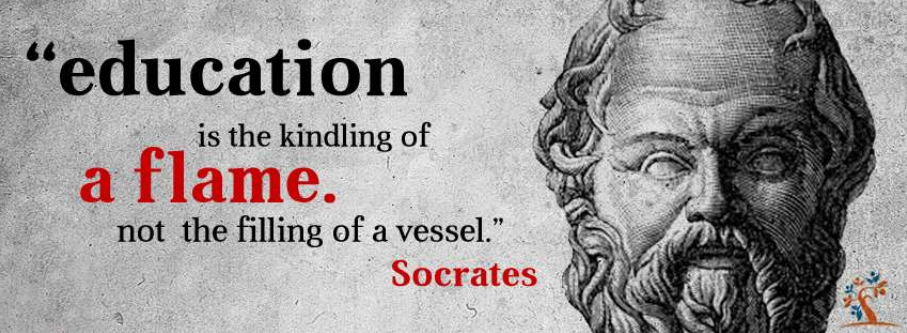

序号 | 日期 | 论语 | 艺凡解读 |
| 0501 | 今日分享金句：
并非所有的知识都需要有用，有时求知本身就是一种快乐。 --《列奥纳多 · 达芬奇》
| （本期无） |
1 | 0502 | 《论语·述而》 7.3
子曰：“德之不修，学之不讲，闻义不能徙，不善不能改，是吾忧也。”
| 早上好书友们，今天是5月2号，我们继续分享《论语·述而》篇的第三章，子曰：“德之不修，学之不讲，闻义不能徙，不善不能改，是吾忧也。” 这一章可以与上一章联系起来，上一章孔子说，“默而识之，学而不厌，诲人不倦，何有于我哉？”这件事情对孔子来说没有难处，那孔子有四件事情担忧的，那就是“是吾忧也。”这也是孔子的四忧，是什么呢？ 对品德不进行培养，对学问不进行钻研讲学，听到好人好事不能跟着做，有了错误又不能及时悔改，这正是我担忧的四件事。 关于这句话的主语有两种解释，有人认为孔子是在描述当时社会的现象，有人说孔子是在讲自己。那综合之前学的论语，我认为孔子在讲自己的可能性会更大，他说过“君子求诸己，小人求诸人。”所以孔子很少去评价自己，他更多的是从自身来找。 在这“四忧”中最难做到的应该是“不善不能改。”因为我们大多数人生活在习惯中，时间长了被蒙蔽了，不知道自己不善，比如我们回到家后，很容易与自己最亲近的人发脾气，因为我们会认为在外面忙碌了一天，忍受一天回家有点不顺心，就想吐槽一下，发泄一下为什么不行呢？ 但我们知道，最应该善待的其实是我们身边最亲近的人，这是因为我们已经习惯了，时间长了，我们往往会把习惯的事情当作正确的事情。 其实我特别佩服可以和老人生活在一起的人，我们生长在不同的年代，生活习惯不同，小到用水用电，大到思维方法，难免出现摩擦，但中国有句老话：百善孝为先，百孝顺为先。老人的一些行为也许并不科学，但几十年的习惯很难改变。生活在一起的子女们努力做到“君子求诸己”。改变不了老人的习惯，就改变自己对这件事的看法。 我真心佩服可以和老人生活在一起的朋友。 那今天就分享到这里啦！希望这四忧可以督促我们前行，明天见！
|
2 | 0503 | 《论语·述而》 7.6
子曰：“志于道，据于德，依于仁，游于艺。”
| 早上好书友们，今天我们继续分享《论语·述而》篇的第六章，子曰：“志于道，据于德，依于仁，游于艺。” 这段话是孔子对学生的四个要求，如果你想在这个世上安身立命，那就要做到这四件事，朋友们还记得之前在为政篇里面有一句话叫“视其所以，观其所由，察其所安，人焉廋哉？人焉廋哉？” 那这四件事情呢，就可以观察一个人的“所以所由所安”，那我们先来说第一个，志于道。志于道，就是我们要有追求，要有志向，那这个志向呢，要更宽一点儿，不只是只局限于我们去买车买房，因为这样物质的追求，往往当我们追求到了之后还会觉得不满足，会一直的去追求，所以孔子这里面建议他的学生追求真理，就像牛顿啊爱因斯坦，还有老子这样的人，他们是都是志于道，他们是想搞清楚整个宇宙，这个时候你会发现整个人生都不会无聊，你会有永远干不完的事情，而且这样的追求会给你带来一种幸福感，所以孔子要求学生们要志于道。 居于德，居我们可以理解为“凭借”，就是我们做事情要凭借着道德，要有道德作为底线，有句话叫德者得也，就是道德的德和得到的得，它们是一个意思，只有我们作为一个道德的人才能得到的更多。 第三个依于仁，就是我们依靠的方法是什么？我们做事具体的方法是来自仁的方法，仁者爱人的方法。那游于艺就是广泛地涉猎，让我们的人生变得更有趣，我们一整天的只谈道德，谈仁义，没有实践的地方，所以孟子也讲过，必有事焉，要在世上进行磨练，但是“游于艺”这个“艺”呢，也是孔子所说的六艺，分别是礼、乐、射、御、书、数。 礼是指礼法，乐就是指音乐，射是射箭，御是驾马车，书就是读书尚书之类的，数就是数学。 所以孔子说，把这四件事情做好就是一个正确的求学的方向。 但现在大部分人却志于钱财，想当世界首富；据于法律，只要这个事情不触碰法律，我都可以做；依于手段，啊，我的手段很灵活，可以让我达成我想做的事情；游于手机。当我们做这四件事情的时候，虽然得到了消遣，然后身体精神上啊，都很放纵，但是我们并没有因为这种放纵而变得快乐，反而会觉得很颓废。前一段时间抖音里或者一些网络平台上也出现了让我放假，然后我可以在家躺一年都不用动，但是实际上大家待了一个月之后，就会发现人生真的荒废了，反而期盼着早点复工，期盼着早日开学。 所以孔子告诉我们，要立大志，志于道；要有底线，居于德；要用仁义的方法，依于仁；然后我们游于艺，广泛地涉猎。这就是孔子对自己学生的求学要求。 很诚恳地说我还没有做到，那书友们呢？今天就跟书友们分享到这里了，我们明天见，拜拜~
【锐&平「守望者」】今天的分享，让我想起了《老子》里面的这段话： 【锐&平「守望者」】我觉得和今天分享的论语内容异曲同工。不过个人也觉得老子说的这段话高度概括，对有些人来说可能也显得更加抽象，让人不理解，或者说无从下手去“必有事焉”。而今天艺凡分享的论语中的这段，则更加地具体，加上艺凡的解读，就让人更清楚在日常生活中可以这样去做，怎样去“必有事焉”。 【艺凡】是的，追求什么就会得到什么。观察一个人的做事，从事上就会看到 他 的 德、仁 在什么阶段了。 【锐&平「守望者」】嗯嗯，说明这个人也有智慧，才能从他人的做事、从事上看到 看到这个人的 德、仁 在什么阶段。 【锐&平「守望者」】我们的追求、我们的言行，塑造了我们自己，也决定了我们是怎么样的人。这也可以说是因果。 【艺凡】是的。虽然时代在变，游戏竞技也成为奥运项目，但万变不离其中，只要“不走偏”，就不会离自己太远。
【扩展】 《 论语·为政》2.10 子曰：“视其所以，观其所由，察其所安，人焉廋哉？人焉廋哉？”①所以：所做事情的动机。 ②所由：所走过的道路。 ③所安：所安的心境。 ④廋（sōu）：隐藏、藏匿。
|
3 | 0504 | 《论语·述而》 7.7
子曰：“自行束脩以上，吾未尝无诲焉。”
(1)束脩：脩，音xiū，干肉，又叫脯。 束脩就是十条干肉。孔子要求他的学生，初次见面时要拿十余干肉作为学费。后来，就把学生送给老师的学费叫做“束脩”。 | 早上好书友们，今天继续分享《论语·述而》篇的第七章，子曰：“自行束脩以上，吾未尝无诲焉。” 这段话的意思是，孔子说只要带十条干肉来当见面礼，没有我不教的人，要知道过去很难吃到肉，有的人家可能一年到头都吃不上一顿肉，所以过年的时候会杀一头猪，把它做成腊肉的状态，这样可以保持的时间长一点，因为古代没有冰箱嘛。 孔子谁都可以教，不论你是工匠、平民百姓，或者是从监狱里出来的人，他都是“吾未尝无诲焉”，所以孔子是开启了有教无类的这样一扇大门。 可能有的书友会想，既然孔子有教无类，那他为什么要收十条腊肉？为什么要收钱呢？南怀瑾先生有一个解释，我觉得特别好，他说，这正是代表了孔子没有野心。 我们知道孔子弟子三千，三千人在当时并不是一个小数目，一个国家大概也只有几万人，而且孔子的弟子都非常地亲近孔子，如果孔子想造反的话，鲁国是受不了的。 孔子说，我不是造反的，我是收钱的，只要给我十条干肉，我就可以教学，这样也可以让执政者安心，那这不是一种政治的力量，而是一种教学的力量。 所以子曰：“自行束脩以上，吾未尝无诲焉。”从孔子的那个时候就开始知识付费了，所以也是给我们今天开启了一个新的商业模式，所以说有教无类是对于我们这整个民族是一个很了不起的贡献，在这里也跟朋友们推荐一个电影，叫《放牛班的春天》，是一个非常有教育意义的电影，有时间的话正好五一假期朋友们可以看一下，那今天就跟朋友们分享到这里啦，我们明天见，拜拜~
|
4 | 0505 | 《论语·述而》 7.8
子曰：“不愤不启，不悱不发。举一隅不以三隅反，则不复也。”
(1)愤：苦思冥想而仍然领会不了的样子。 (2)悱：音fěi，想说又不能明确说出来的样子。 (3)隅：音yǔ，角落。
 | 早上好朋友们，今天我们继续分享《论语·述而》篇的第八章，子曰：“不愤不启，不悱不发。举一隅不以三隅反，则不复也。” 我们都说启发，教育需要启发，那启发这个词就是从这来的。“不愤不启，不悱不发分。”就是这个人憋在心里的那种感觉，就是孔子说，如果一个学生没有憋在心里的那种感觉，说不出来的那种焦急的感觉，他自己没有痛苦，没有挣扎，没有认真的思考过这个问题，你不要急着去启开他的这个思路。启发的启有点接近于提问的这种方式，用提问的方法让他明白这件事情。然后“不悱”，不悱，就是话到嘴边啊，却组织不好语言、表达不出来的那种感觉，这个时候啊，不要跟他讲明白。 所以古代有一个说法，就是老师培养一个孩子的成长最好的状态呢，就叫做“啐啄同时”。 什么叫“啐啄同时”呢？就是一个鸡蛋，它刚要孵开的时候，小鸡在里面会拿嘴来叨这个蛋壳，在外面的母鸡呢，一看，小鸡拿嘴叨这个蛋壳了，那母鸡啪的一下就从上面一敲，那小鸡就出来了。这个呢，就叫做“啐啄同时”，这是要母鸡要等这个小鸡啄了她才打开，但如果她着急想让小鸡快点出来，就从外面直接戳开这个鸡蛋的话，会发现是一滩黄色的，因为小鸡还没有成熟，这个就浪费了一条生命。 所以孵化小鸡也是一个非常不容易的事情，需要啐啄同时，教育也是需要这样，啐啄同时。 实际上，这个非常像我们现在所讲的翻转式教学，就是先让学生们在一起讨论、先体会、先发问，让学生在内心中对这个事情真的是感兴趣，觉得我怎么这么想知道这个答案呢，好像有点影子，但吧，又说不清楚，就特别的捉急的这种感觉，老师你能不能帮帮我启发一下我，当她真的想要知道这件事情的时候，老师再给他启发、提问、或者是指导，那这个时候进行的引导式的教学，孩子的收获是最大的，老师也不那么累。 后面一句话“举一隅不以三隅反”。“隅”就是“角”的意思，桌角我们知道一个桌子有四个角，意思就是我跟你说了一个角的道理，你就要明白其它三个角的道理。 也就是举一反三，那后面“则不复也”有两个意思。有人认为说，如果举一你都不能知道反三的话，那你这种人我教不了，但是我们知道孔子是有教无类的，他对学生再不满意，他也只是说对方没有做到“德”啊，没有做到“仁”，而不会说你不是我的学生，我不教你了，所以呢，这句话我们更多的可以把它理解为， 不是不教，而是不要替他思考。我给你取了一个角，你把其它三个角没想明白，没关系，我不告诉你，我也不会讲第二遍，你再好好想一想，好好想一想这个角，自己认真的在那块儿推测一下，这个叫“则不复也”。 这章讲的是教育。孔子希望学生可以自发地思考，但现在往往我们学会了一角，当我们看到第二个角不会时，老师会比我们学生还着急，想一想说，算了，我教你吧，然后第三只角，第四个角，老师都会教我们。那这样的一个，我个人感觉啊，这样一个教学方式是反过来了，就变得老师很累，老师要不停的思考，不停的解答学生的问题，其实学习是学生的事情，应该是让学生自己去思考，自己实在想不出来之后，老师点拨一下，这样的记忆才是最深刻的，这样的知识才是真正的学给了自己。 《述而》篇的第七章和第八章是可以连起来的，第七章讲的是有教无类，这让我想到了之前我在华师读书的时候，有一次做志愿者，就是我们学校有给中国高校的校长进行辅导的这么一个课程，那里面有一位校长，他写的评语吧，就是叫学习心得，让我特别的有感触，我也想跟朋友们分享这句话。 他说，我们寻找的是适合学生的教育，而非适合教育的学生。我看完这句话特别有感触。 现在回想起来读初中高中的时候，班上总有几个同学会被老师啊、校长劝转学或者是留级，那现在想想他们的这些做法，其实是怕自己的班级的成绩受影响，怕自己的奖金受影响，怕学校在整个学区的排行受影响。 【锐&平「守望者」】这样的老师和校长就已经将教育功利化了，其实他们自己就已经功利化了，已经不具备“师德”了。 班级里会有一些经常被老师叫去谈话的成绩不够理想的同学，其实他们并不笨，甚至他们在某些方面比其他同学要优秀很多，但也许只是因为他们在代数这一方面没学好，他的数学成绩不高，影响了其它的成绩，就会被莫名其妙地冠上学渣的名字，其实想想看，他只是因为分数没有学好，那他分数没有学好，那可能以后在大学的时候微积分真的就没办法学好，但是不能因为这一点就给他冠上学渣这样的名字。 @锐&平「守望者」 是的，说起来就痛心。 群里面有很多我的同学，他们大都从事教育工作，所以我特别希望他们能听到昨天和今天的这两句论语的分享。教育不是注满一盆水，而是点燃一团火，老师们更应该让学生去找到人生的目标，人生的理想，让学生们真正的感受到学习的乐趣， 虽然我们大部分人不是从事教育工作的，但是三人行必有我师焉，也希望我们可以通过自己的行为，通过自己的思想，慢慢的影响身边的人，那今天就跟朋友们分享到这里啦，我们明天见，拜拜！ 【锐&平「守望者」】是的，真的是痛心！我从小到大身边也有一些这样的同学，特别是在小学的时候，那个时候就为这样的同学感到同情，因为处于求学阶段的学生，特别是初高中生，更别说小学生了，教育和引导的工作就是在老师和家长这一边，可是很多老师和家长却没有耐心，更没有方法，而是着急和攀比。 【艺凡】@锐&平「守望者」 是的，我有一个好朋友，她因为成绩不理想，被老师劝退，初中都没读完，她去考了中专，16岁就参加工作了，我们读高中，她却刷盘子。我们一直都有联系，每年回去都会聚会，好在她特别上进，现在日子过的也挺好。可像她这么坚强的，有多少呢？ 【锐&平「守望者」】我一直相信佛陀所说的每个人都是本自具足的，通俗地说，每个人都是天才，对于儿童和青少年来讲，老师和家长的这种对学生和子女不一视同仁、有教无类，对教育急功近利而不是循循善诱，也不根据孩子自己的特点去引导，让很多人早早地就对学习失去了兴趣，或者以为学习就是考个好分数，而扼杀了很多很多天才。当然，现行教育制度的弊病和社会风气也脱离不了干系。 【艺凡】去年跟一个做老师的同学聊天，她很惆怅，她对学生特别好，真的是有教无类那种。她非常认同，教育是老师和家长共同的责任，可很多家长把责任全部推给老师了。 【锐&平「守望者」】@艺凡卖茶的哲学硕士 很佩服你这位朋友以及和你朋友一样的人。我在有一个朋友在广州教初中语文，还是班主任，就是你说的这种情况，又当老师又当爹妈，操碎了了心，有时还不被理解，工作很累，压力很大。 【艺凡】是啊，责任越大，压力越大。 【艺凡】家人是应该分担教育压力的。 【艺凡】像你刚刚说的“扼杀”，小时候我们就被老师和家长吓唬：学习不好的话你就去捡破烂儿，学习不好的话你啥都不是，就从小我们就觉得学习是一件痛苦的事情，我们是为了不捡破烂儿，能吃饱饭而学习，并没有真正的感受到学习本身的快乐。 【锐&平「守望者」】@艺凡卖茶的哲学硕士 只能先“反求诸己”，从自己做起啦 【艺凡】是啊 【锐&平「守望者」】我真的觉得是被扼杀了，感到痛惜 【艺凡】还好，我们现在懂了，以后要好好引导子女，帮老师分担责任 【锐&平「守望者」】嗯嗯，我也是
|
| 0506 | 今日分享好书：《寂静的春天》 推荐理由：人类亲手将自己送上…
| 中午好书友们，今天不分享论语，向您推荐一本书《寂静的春天》，这是我在研究生期间读的第一本著作，到现在书中描写的画面我仍旧历历在目。 《寂静的春天》是美国科普作家蕾切尔·卡逊创作的科普读物，首次出版于1962年。在这本书中，卡逊以生动而严肃的笔触，描写因过度使用化学药品和肥料而导致环境污染、生态破坏，最终给人类带来不堪重负的灾难，阐述了农药对环境的污染，用生态学的原理分析了这些化学杀虫剂对人类赖以生存的生态系统带来的危害，指出人类用自己制造的毒药来提高农业产量，无异于饮鸩止渴，人类应该走“另外的路”。 如果，您没有时间看书，我推荐您看一部电影《黑水》推荐的理由，您看下面的三张图片就知道了（三张图片见左边栏） 这是一个真是的故事，您看完一定会有所触动，甚至开始行动！
|
5 | 0507 | 《论语·述而》 7.11
子谓颜渊曰：“用之则行，舍之则藏，惟我与尔有是夫。” 子路曰：“子行三军，则谁与？” 子曰：“暴虎冯河，死而无悔者，吾不与也。必也临事而惧，好谋而成者也。”
(1)舍之则藏：舍，舍弃，不用。藏，隐藏。 (2)夫：语气词，相当于“吧”。 (3)三军：是当时大国所有的军队，每军约一万二千五百人。 (4)与：在一起的意思。 (5)暴虎：空拳赤手与老虎进行搏斗。 (6)冯河：无船而徒步过河。 (7)临事不惧：惧是谨慎、警惕的意思。遇到事情便格外小心谨慎。 | 早上好朋友们，今天我们继续分享《论语·述而》篇的第十一章，子谓颜渊曰：“用之则行，舍之则藏，惟我与尔有是夫。”子路曰：“子行三军，则谁与？”子曰：“暴虎冯河，死而无悔者，吾不与也。必也临事而惧，好谋而成者也。”这里的“冯”是通假字凭借的“凭”。 子路永远是被孔子敲敲打打的那个人，而颜回呢，就是孔子永远捧在手心上的那个人。孔子今天跟颜回突然说了一句话，他说，用之则行，舍之则藏，只有咱们两个人能做到吧。 这个时候子路在一边不开心了，说“子行三军，则谁与？”因为子路打仗很厉害，就是说如果你打仗你带谁去。 用之则行，就是政府要让我工作，让我出山，我们知道孔子曾经做过大司寇，那政府需要我二话不说马上就干，没有任何问题。但是舍之则藏什么意思呢？大家知道孔子是从什么时候开始周游列国的吗？ 孔子在鲁国当官的时候，有一个故事叫胙肉不至，就是鲁国的君主在祭祀的时候祭祀的肉要分给每一个大夫，这是代表一个国家的荣誉，但是这个肉就是没有给到孔子，孔子在家里等了几天一直没送来，后来他就把官印一卦，说：走了！但是他到边境的时候还是等了三天，依然没有人把肉送过来，这个时候，孔子开始了周游列国。 所以舍之则藏，如果人家不用咱们了，咱们就回回到家里好好休息、好好修行，所以我们可以看到，说你用我，我就好好干，你不用我，我就好好的休息，这件事情只有你跟我、就只有我和颜回可以能做到吧。 这些事情有多难呢？其实我们想一想身边的例子，当别人跟我们说这件事情不错，你来做吧，大部分人会说，哎呀，我不行，会犹豫，会推三阻四，有的时候还会怀疑这是不是陷阱，林则徐曾经有句话说，苟利国家生死以,岂因祸福避趋之。 就是用之则行的态度，你用我，我立刻能承担责任，这是一种力量。舍之则藏，大量的人是舍之则抱怨，舍之则怨，舍之则难过，在家里面啊，辗转反侧，诶？真的，我得罪谁了？这次真的是气死我了！所以如果他觉得自己不如意，还有很多人就是觉得我自己的能力很强，但是为什么别人总是看不到？产生了大量的这样的负面情绪，所以如果能把这两件事情同时做到真的是一件非常难的事情，也是一个非常有修养的事情。 孔子非常直接地怼回去，他说暴虎冯河，暴虎是什么意思？这是老虎来了，空手就上，空手跟老虎打，是有勇气，但是我们知道武松打虎，他还有一个哨棒呢，那孔子书你就是空着手打老虎，那冯河呢，就是你要过河的时候，没有船，没有桥，直接走，从河中间走过去，这个叫冯河，所以暴虎冯河就是这人太莽撞，只靠勇气，那这种人“死而无悔者”，死了也无所谓。 这类的人往往觉得自己的生命不重要，孔子说，这样的人我才不带呢，我是不会和你一起前行的。 那么，孔子会和什么样的人前行呢？“临事而惧，好谋而成者也。”他需要的是那种懂得敬畏、小心行事，以智谋取胜的人。 有的人会觉得临事而惧显得没出息，真的是这样吗？那孔子认为临事而惧是一个适当的紧张，这种紧张呢是诚恳和严谨的体现，会让我们认真地规划每一步，让自己朝着更加正确的方向迈进，所以遇到紧张的事情，有些人表现得不在乎的样子并不会显得成熟，我们适度的紧张，认真的对待会有更好的结果。 这一章可以展开很多话题，感兴趣的书友，咱们可以用一整天的时间来讨论，那今天就分享到这里啦，我们明天见，拜拜。
【扩展】 |
6 | 0508 | 《论语·述而》 7.13
子之所慎：齐、战、疾。
(1)齐：同斋，斋戒。古人在祭祀前要沐浴更衣，不吃荤，不饮酒，不与妻妾同寝，整洁身心，表示虔诚之心，这叫做斋戒。 | 早上，好朋友们，今天继续分享《论语·述而》篇的第十三章，子之所慎：齐、战、疾。这里面的“齐”是通“斋”，意思是祭祀前所准备的一些斋戒工作，孔子最慎重的三件事情是斋戒，战争和疾病。所以导致孔子在这三件事情上非常的谨慎认真。 这三件事情：祭祀、战争和疾病往往是人类历史上最大转折点发生的地方，比如有的朋友可能读过《人性中的善良天使》或者《丝绸之路》之类的书籍，就是把世界历史贯穿一遍的书籍，我们会发现每一个历史的发展到最后突然转弯，很有可能是黑死病等某种疾病带来的或者是蒙古人的一场大的战争，有可能是君士坦丁大帝他改信了基督教，所以我们发现信仰、战争和疾病是历史的转折点，这些东西能够给整个社会的发展带来巨大的转折。 齐、战、疾。这三个代表什么样的关系呢？ 所以，如果我们能处理好这三大关系，如果在一个国家中可以把握信仰、战争和疾病这三种最难以控制的东西，这个国家才可以沿着他所设想的方向不断的前进，所以孔子非常慎重的这三件事情，齐、战、疾。想一想，现在我们面对的这场新冠病毒不也是一件非常难以预测，但是又急需把它把握好、控制住的一件事情吗？现在看到每个国家对于这场疾病的不同的态度也代表了这个国家的综合水平吧，所以还是很幸运，我们生活在中国，我们是中国人，那今天就跟朋友们分享到这里啦，我们明天见，拜拜。
|
7 | 0509 | 《论语·述而》 7.14
子在齐闻《韶》，三月不知肉味，曰：“不图为乐之至于斯也。”
(1)《韶》：舜时古乐曲名。 | 早上好，书友们，今天我们分享《论语·述而》篇的第十四章，子在齐闻《韶》，三月不知肉味，曰：“不图为乐之至于斯也。” 这里有两个成语，一个是在齐闻韶，另一句是三月不知肉味，都是出于此处。 这件事情有人考证过，大约发生在公元前517年，也就是孔子大概35岁的时候刚刚步入中年，孔子在齐国听到了《韶》乐，《韶》是什么音乐呢？是舜的音乐，孔子啊，听音乐其实也是跟人有关，因为我们知道孔子非常喜欢舜这个人物，所以舜的音乐呢，他就会觉得特别好听。 好听到什么程度呢？三月不知肉味。孔子听了之后回到家三个月都不知道肉的味道，我们知道孔子是个很爱吃肉的人，如果肉切的不整齐他都不吃，做的不好，食不厌精，脍不厌细。做的不好吃，孔子都不吃，所以孔子是一个很讲究生活情调的人。 但是孔子因为听了这个音乐后，三个月都不知肉味，吃饭都没有味道，所以这叫发愤以忘食，当一个人对着事情特别投入的时候，特别钻研这件事情的时候，他会忘记了食物的这种美好，发愤以忘食。 牛顿的妹妹说，牛顿活到四五十岁的时候，跟一个五六岁的小孩没有区别，如果没有人叫他吃饭的话，他是不会来吃饭的，你把他叫在了饭桌上，如果不把菜放到他的盘子里，他都不会吃，所以牛顿经常是穿着睡衣、拖鞋，头发也不梳，走在剑桥学校里面，满脑子在想那些关于一些数学理论啊公式等，然后拿起随便拿起一个枝条啊，或者是坐在地上乱画。写他的这些公式，所以对于吃饭什么这些事情他是毫无在意的，他是完全沉浸于学术的这件事里面，那这和孔子的三月不知肉味是非常相似的一种境界啦，学习的境界。 那我们现在呢，也把这种事情叫做心流，有一本书的名字也叫《心流》，就是讲我们在做一些非常入迷的时候，仿佛是忘记了时间的存在，就比如说跟闺蜜约会啊，下午茶的时候可能聊聊天，开开心心的几个小时就过去了，但是如果有一天，我们被安排在一个教室或者图书馆，说你要读四个小时的书才能出来，这个时候我们觉得啊时间很漫长，但是如果我们发现一本书非常有趣的时候，那我们也会很快的读完这本书，所以这些都是属于心流的感觉。 孔子最后感叹了一句“不图为乐之至于斯也。”有人把它念为 lè，有人把它念为 yuè，其实都可以。如果时间成 lè 的话，就是没想到这件事情可以这么快乐，念成 yuè，就是没想到音乐可以这么美好，所以在这里我们知道三月不知肉味、还有在齐闻韶的典故出于此处，那今天就跟朋友们分享到这里啦，我们明天见，最后跟朋友们推荐《犀牛》这本书，有机会的话，朋友们可以读一读，听一听。
【扩展】 |
| 0510 | 母亲节
今日分享：母亲节的由来 | |
8 | 0511 | 《论语·述而》 7.15
冉有曰：“夫子为卫君乎？” 子贡曰：“诺；吾将问之。” 入，曰：“伯夷、叔齐何人也？” 曰：“古之贤人也。” 曰：“怨乎？” 曰：“求仁而得仁，又何怨？” 出，曰：“夫子不为也。”
(1)为：这里是帮助的意思。 (2)卫君：卫出公辄，是卫灵公的孙子。公元前492年￣前481年在位。他的父亲因谋杀南子而被卫灵公驱逐出国。灵公死后，辄被立为国君，其父回国与他争位。 (3)诺：答应的说法。 | 早上好书友们，今天我们一起学习《论语·述而》篇的第十五章，冉有曰：“夫子为卫君乎？”子贡曰：“诺；吾将问之。”入，曰：“伯夷、叔齐何人也？” 曰：“古之贤人也。”曰：“怨乎？”曰：“求仁而得仁，又何怨。”出，曰：“夫子不为也。”其中，这句“求仁而得仁，又何怨”，可以说是一个在网络上非常流行的座右铭了。 想要了解这段话，我们需要知道当时卫国发生什么事情了，孔子见南子，大家都知道。南子是卫灵公的夫人，因为南子的名声不太好，跟宋朝有染，所以就弄的风言风语。那卫灵公老了，他的儿子呢，叫蒯（kuǎi）聩就特别地恨南子，后来就把南子给暗杀了，我们如果看过《孔子传》这个电影，里面就会看到这一幕了，那卫灵公就想要杀蒯聩，杀他的儿子。他的蒯聩就跑到了隔壁的晋国，当时晋国是一个大国，蒯聩就躲到了晋国，卫灵公死了之后，他就把自己的位置直接传给了孙子，他的孙子叫卫出公，出公的名字叫做辄。这个时候就糟糕了，因为卫出公辄的爸爸还在，但是他的爸爸逃在了晋国。（【平】这段话关于南子被杀、卫国之乱可能有误，见下面的相关链接） 晋国一看这是好机会啊，正主在我这儿。于是晋国呢，就在这个时候把蒯聩送回了卫国。这个时候呢，就是你看你爸爸回来了，你今天把你的位置让给还给他吧，要不然你就是不孝。但是你一旦把位置让给了蒯聩，晋国就直接从后面打了进来，这个国家就算是完了。这个时候孔子正好是在卫国，类似于做参谋这样的一个角色。有人，所以冉有就问，说孔子老师会不会在这里继续从政，如果是从政的话，这个国家又打起来了，那他们要事先做好准备，这是战争，也是比较凶残的，所以先要问一问老师，他到底打算怎么做，会不会留在这儿，因为这也牵扯到其他同学的动向，那所以冉有就问子贡，子贡说好，那我去问一下。 子贡非常的聪明，很灵活，这么敏感的话题，如果他直接进来就问孔子，你是打算干还是不干呢？这种事情就相当于这是个秘密啦，就不能问。所以他进来之后就说“伯夷、叔齐何人也？”伯夷叔齐，这是明知故问，因为古代人都知道，伯夷叔齐，他们是孤竹君的两个孩子，这两个王子为了让地，不当皇帝，谁都不愿意当，两个人跑了。所以这两个人呢是礼让之人，就专门问孔子伯夷叔齐这两个人是什么样人呢？孔子说“古之贤人也。”这是古代的好人啊，贤人、礼让之人。然后子贡又问他说“怨乎？”难道这两个人心中就没有怨恨吗？国王也不当了，后来饿死在首阳山上，内心不怨恨吗？孔子就说了一句名言“求仁而得仁”。 “求仁而得仁，又何怨？”你不就是想当个好人吗？你现在当了好人，又有什么可怨恨的呢？如果你说你求仁而得名，或者你求名而得利，你得到的和你想要的是不一样的，你可能会有怨恨，但是你就是声称求仁就是想做一个好人，你现在又成为了好人，又何怨呢？又有什么可抱怨的呢？ 所以聪明的人听到这句话都知道了，孔子是不会留在卫国帮卫灵公（【平】这个时候已经是卫出公了）做这样的事情，因为这件事情无论怎么发生，它都是狗咬狗一嘴毛的事情。蒯聩，如果是回到了卫国，他的儿子直接把国家还给父亲，那后面的晋国会直接攻打进来，那卫国整个国家就会灭亡；但如果他的儿子卫出公不把皇位还给他父亲，他们打起来，儿子打爸爸，在孔子看来，这也是大逆不道的事情，所以这件事情无论帮谁都没有一个好的结果。那孔子呢，也劝子路不要参与，但是子路说言而有信，他已经答应对方帮助、参与这件事情了，所以他还是继续留下来，这个时候孔子就非常的伤心难过，后来子路死的非常惨。 刚才口误：子路是随孔子出卫国后，又返回到卫国，刚回到卫国就遇到卫国大乱。他为了保护卫出公，被剁成肉酱——醢（hài）之。 子路后来死的特别惨，被剁成了肉酱，叫醢之，那今天就跟书友们分享到这里，在这一章中最重要的一句话就是，求仁而得仁又何怨？那我们明天见，拜拜。
【扩展】
|
9 | 0512 | 《论语·述而》 7.16
子曰：“饭疏食饮水，曲肱而枕之，乐亦在其中矣。不义而富且贵，于我如浮云。” | 早上好书友们，今天分享《论语·述而》篇的第十六章，子曰：“饭疏食饮水，曲肱而枕之，乐亦在其中矣。不义而富且贵，于我如浮云。” 这是孔子自道，在说自己的生活状态，他说，吃粮食可以吃的粗糙一点，我们现在吃的都是精米，要把稻壳啊这些都剥掉，孔子说，吃一些粗米、糙米、粗粮都可以，然后喝水，古人讲汤是指热水饮汤，喝汤喝的是热水，而水的话就是指冷水，我就吃一点糙米，喝一些冷水，“曲肱而枕之”，把胳膊肘放在后脑勺上，这样躺着就已经是很幸福的事情了，“乐亦在其中矣。” “不义而富且贵，于我如浮云。”你让我做一些不义的事情，变得富且贵，让我跟杨补这样的人，还有季氏这样的人打成一片，跟他们一起谋划分我一块田地，这样的事情啊，“于我如浮云”，对我来讲就像天上的浮云一样。 所以孔子说，让我过上这样简单的生活，吃点糙米饭，喝冷水，躺在自己胳膊上，本身也是快乐的，这就是孔颜之乐，在宋儒考学生的时候问，“孰为孔颜之乐？”颜回的乐，是“一箪食，一瓢饮，在陋巷，人不堪其忧，回也不改其乐。”就是颜回穷成这个样子，他也是很欢乐的。孔夫子“饭疏食饮水，曲肱而枕之”，也是很快乐的，那他们乐什么呢？ 这一种是生命本然之乐，比如我们能体验到自己的呼吸，朋友们你们觉得吗？呼吸就是一个很伟大的奇迹，我们一呼一吸，人的生命就可以延续下来，这是多么奇妙的一件事情！那像颜回他们还有孔子，就是能感受这种生命的本然的这种快乐。 所以孔子说，我获得幸福的能力实在太强大了，我随便怎么样的生活我都可以获得幸福。所以幸福是一种能力，而不是某种状态，有的人我们看到他很富有，或者他当了某个行业的领导，某个企业的领导高官，但这些都是外在的，我们知道孔子他所说的乐，是一种不找的状态，是这样一种能感知幸福的能力，而不是为了达到某一种状态，人才能够幸福。 所以书友们你们追求的是哪种幸福呢？你们感知幸福的能力有多少呢？那今天就跟朋友们分享到这里啦，最后推荐一本书叫做《幸福的方法》，有时间可以听一下，那今天就到这里啦，我们明天见，拜拜~
|
10 | 0513 | 《论语·述而》 1.17
子曰：“加我数年，五十以学《易》，可以无大过矣。”
(1) 加 通 假，译：借 | 早上好书友们，今天分享《论语·述而》篇的第十七章，子曰：“加我数年，五十以学《易》，可以无大过矣。” 所以这句话表明了孔子对《周易》的认可，也是在表扬《周易》，认为《周易》是有着非常值得读的典故。 孔子说，如果上天能让我多活几年，再向上天借几年，在我50岁的时候就开始学《周易》，那我此生就可以没有大错了。孔子为什么这么说呢？我们先来看一下四书五经都包括哪些： 四书：《论语》《孟子》《大学》《中庸》 五经：《诗》《书》《礼》《易》《春秋》 易经：《连山易》《归藏易》《周易》
关于《周易》，我没有太多的了解，但我相信它不只是打卦、占卜之类的事情，因为一个国家的发展，绝不是靠算命就可以维持她的生命状态的。那我们知道孔子在50岁左右的时候，带着他的学生周游列国，那其中肯定有很多困难的地方，比如我们知道的绝粮于陈蔡，所以孔子才有感而发说“五十以学《易》”，如果那个时候我就开始学习了《易经》，可以无大过矣。 那今天就跟书友们分享到这里啦，有时间的话我们再一起读一读四书五经，明天见，拜拜。
|
11 | 0514 | 《论语·述而》 7.19
叶公问孔子于子路，子路不对。 子曰：“女奚不曰：‘其为人也，发愤忘食，乐以忘忧，不知老之将至云尔。’”
(1)叶公：叶，音shè。叶公姓沈名诸梁，楚国的大夫，封地在叶城（今河南叶县南），所以叫叶公。 (2)云尔：云，代词，如此的意思。尔同耳，而已，罢了。 | 早上好书友们，今天我们继续分享《论语·述而》篇的第十九章，叶公问孔子于子路，子路不对。子曰：“女奚不曰：‘其为人也，发愤忘食，乐以忘忧，不知老之将至云尔。’” 这里的“叶”读“shè”，叶工，我们知道一个成语叫叶公好龙，公是什么意思呢？是大县长的意思，一个县比较大，那这个县的县长叫公，小县的县长叫尹，通常大县都是吞并了一些小国，比如叶国，所以就改名为叶县啊，这里的县长就叫做叶公，这个人呢，他叫沈诸梁，在历史上也是一个很有名的人物。 叶公问子路，孔子是怎样的人？“子路不对”，子路回答不上来，他嘴有点儿笨，回去他把这些事情告诉了孔子，孔子说，你怎么不这样说呢？“其为人也”，他这个人啊，“发愤忘食”，发愤学习起来就忘记吃饭；“乐以忘忧”，高兴起来就忘记了忧愁，无论多么艰难的情况下，他都可以很开心，“不知老之将至”，就连自己正在老去这件事情啊，他也不知道。 “云尔”，也就是这样了。这是孔子对自己的评价，曾经听过一个观点，说你怎样介绍自己就表明你自己信心的程度，我们经常会听到有些人介绍自己说我是海归，我是某某企业的高管，我是某某大学毕业的，我是一个爸爸之类的这样的介绍，那其实这些介绍呢，都是一个外在的身份，当我们越这样介绍自己的时候，其实我们内心当中的担忧、焦虑和压力越来越大，因为我们介绍的全部都是外在的位置，我们看到的是身份性的自我，当我们越强调我们自我的身份的时候，压力就会越大，因为我们要配得上海归、配得上爸爸、配得上名校毕业或者是企业白领这样的说法，所以我们就会越来越焦虑。 那么怎样愉快地介绍自己呢？你可以说我是一个正直的人，我是一个诚实的人，我是一个有爱心的人，我是一个乐于助人的人，我是一个可信任的人，那你看这些就不是身份性的自我，而是本质性的自我。 所以当一个人经常地回归到本质性的自我的时候，我们发现自己身上的特点，你会发现会觉得很轻松、很愉快，内心很有力量，这个就叫做回归价值观，人就有力量，所以有的时候我们会在社会中觉得压力很大，就是因为我们脑子里面想的全部都是身份性的自我，我又获得了什么身份？我是真的是假的，我对不对得起这个 title，我对不对得起我这个身份。万一别人瞧不起我怎么办？所以我们想想看有一个人会瞧不起一个正直的人吗？就算他是一个贩夫走卒，但他为人正直，我们会瞧不起他吗？不会，因为那个是他的本质。回归到自己的本质就可以看到自己生命的特性，而不是外在的身份，那我们整个压力状态就会变得不一样，会变的很轻松、很愉悦、很自信，做事有章法。 我们看到孔子的这段自我介绍，他没有说我曾经在鲁国当过大官，我有3000名的学生，他说的全部都是本质性的自我，他说，发愤忘食这个是努力；乐以忘忧，这是一种快乐；不知老之将至，这是一种心流，心流就是我们尽努力又获得了快乐，这才是心流的状态，那最后跟朋友们推荐一本书，这本书的名字就叫做《心流》。也希望朋友们通过孔子的这一句对自己的描述和介绍，能对本质性的自我有一个更深的认识。那今天就分享到这里啦，想一想你有什么样的特点呢，有什么与众不同之处呢？那我们明天继续分享，拜拜。
【楼兴兵】人生常忧，总以乐忘忧，是为常乐。孟子曰：反身以诚，乐莫大焉。 【艺凡】孟子曰：“万物皆备于我矣。反身而诚，乐莫大焉。强恕而行求仁莫近焉。” @楼兴兵 【艺凡】反躬自问诚实无欺，便是最大的快乐。 【艺凡】其实，在我看来偶尔介绍一下身份性的自我也不是不好，有压力才有动力，这样才能督促着我们不断的前行。当然我们也要认清本质性的自我，今天的这句论语非常好，希望朋友们有时间可以听一下。
|
12 | 0515 | 《论语·述而》 7.20
子曰：“我非生而知之者，好古，敏以求之者也。”
| 早上好朋友们，今天我们分享《论语·述而》篇的第二十章，子曰：“我非生而知之者，好古，敏以求之者也。” 看到这些话，我们大概可以猜到有人跟孔子说你是圣人，所以你做得很厉害，我们做不到。我们很喜欢把别人封为圣人啊，或者说对方是天才，比如说莫扎特钢琴弹得很好，比如说，哎呀，他太厉害了，你没办法学，六岁，最后就会作曲，他是个神童，或者是说贝多芬是天才，华罗庚是天才。 我们为什么一定要把别人的一些长处归究于天赋呢？大家能理解这个问题吗？因为这个呀给我们不行动带来了理由和借口，人最怕的事情是叫做认知失调。 有的人会想莫扎特很厉害呀，那我觉得我也不赖，我也挺厉害的，可是我为什么没有做到莫扎特那个水平呢？认知就失调了。认知失调就会觉得很痛苦：哎呀，我怎么不如莫扎特，我怎么这么笨啊，我好难过。难过的时候怎么办，我们就要改变这个想法，大量的人不愿意改变自己，其实，有本事的话你像莫扎特学呀，可是不愿意学习不愿意练，当我们这个认知失调的时候就会说：莫扎特我学不了，他是个天才，几百年都出不了这一个，所以他就给莫扎特贴上了一个神圣的标签，这样他就放松了。 其实这种认知失调对谁都没有好处，孔子和莫扎特他们从来没有认为自己是天才，而这样的认知失调，只是给自己不行动不努力找了一个借口，在《刻意练习》这本书里面有一句话叫：别人能做到的事情，我也能做到。那孔子的这一句“我非生而知之者，好古，敏以求之者也。”正是说的刻意练习这件事情。 王阳明在18岁的时候遇到了娄谅，娄谅的一句话改变了王阳明的一生，娄谅说什么呢？他告诉王阳明，圣人必可学而至，像孔子，老子这样的人，只要你努力学习，你也一定会达到他们的水平。 所以书友们，你们想成为怎样的人呢？你们为之努力行动了吗？不要做“今女画”的人哦，那今天就跟朋友们分享到这里，我们明天见，拜拜。 【锐&平「守望者」】我是一个好古的人，但在敏而求之的路上需要不断努力！ 【艺凡】我也是，一起努力！！！
【扩展】 |
13 | 0516 | 《论语·述而》 7.21
子不语 怪、力、乱、神。
| 早上好书友们，今天我们分享《论语·述而》篇的第二十一章，子不语怪、力、乱、神。 孔子从来不谈论怪、力、乱、神这四件事，怪是指怪异的事情，比如哪里来个飞船或者百慕大的三角洲飞机过去之后会出不来等等；力呢，是指暴力、强权；乱是变乱、乱情、八卦之类的；神是鬼神。 孔子从来不讨论怪、力、乱、神，也不参与这类的讨论，所以管理好自己的语言系统是非常重要的。 撒切尔夫人曾经说过一句话： 小心你的思想，它会成为你的言辞， 小心你的言辞，它会成为你的行为， 小心你的行为，它会成为你的习惯， 小心你的习惯，它会成为你的性格， 小心你的性格，它会成为你的命运。
所以要管好自己的语言系统，要对自己说的每一句话能负责任，从此对于这类的事情一直保持着存而不论的态度，但实际上，我们今天所处的媒体环境会发现，讨论怪力乱神最容易吸引眼球。 但是这样的曝光，对于解决这类的事情没有任何的好处，比如报道自杀，媒体争相报道，但是报道的越多，自杀的人就越多，这就叫做曝光效应，所以在媒体中管控媒体是一个非常重要的事情，因为媒体对社会的影响真的非常大，尤其是对于暴力的世界，像很多青少年，他们没有判别的这种区分，很容易去模仿。 所以孔子说，“子不语怪、力、乱、神。”不要讨论这些乱七八糟的事情，什么哪个明星离婚啦，谁跟谁又好了，这些都是其他人的事情，这都是属于关注圈，我们要做的是自己能够控制的事情，要做影响圈的事，所以想一想撒切尔夫人的那句话，我们也要管好自己的思想、语言、行为、习惯、性格，因为这终将会成为我们的命运，所以子不语怪力乱神。那今天就跟朋友们分享到这儿，我们明天见，拜拜~
|
14 | 0517 | 《论语·述而》 7.23
子曰：“天生德于予，桓魋其如予何？”
(1)桓魋：魋，音tuí，任宋国主管军事行政的官——司马，是宋桓公的后代。 | 早上好，书友们，今天分享《论语·述而》篇的第二十三章，子曰：“天生德于予，桓魋其如予何？” 这是一个句式，“某某某 其如予何？”就是“这个人能拿我怎么样呢？” 这句话大概是孔子60岁左右的时候，在宋国出过一次事情，他在大树底下给人讲学，讲着讲着的时候，宋国的司马桓魋，他在论语里面啊，是一个反派的、坏人的形象，这个人很坏，怎么坏呢？他总是想杀孔子，孔子在讲学，他派人来把孔子的旁树给推倒，但这个事情有点讲不通，因为一个司马，如果他想杀一个人的话，他一箭射死就好了，他干嘛要用推树的这种奇怪的方法呢，所以我们可以更好地理解为他是想羞辱孔子。 这个时候，孔子的学生说，老师，老师快走，太危险了这里。那孔子就说了一句自我安慰的话，也是给自己打气，他说“天生德于予”，老天爷把德性赐予我，我身上肩负着很多的责任，我需要去传播德性，这是老天爷安排的，老天爷最大，所以“桓魋其如予何？”桓魋能把我怎么样呢？然后就走了，这是孔子的一次做安慰。后面还有一次叫子畏于匡，就是孔子在匡地被匡人给围住了，很危险，这个时候孔子又说了一句话，叫“匡人其如予何？”这些匡人能把我怎么样呢？我是有责任的，我有很多事情要做，所以这是一种自信。朋友们说自信有用吗？就是给自己这种打气的事情。历史上的话，有一个人叫王莽。 王莽，最后汉军打来的时候，在那里他跟周围的人讲，因为王莽觉得自己是正统的人，是儒家的正统，所以他说汉兵其如予何？说这些汉兵又能把我怎么样呢？后来他被乱刃分尸了。所以这样的自信呢，也不一定完全有用，但是这种话给儒家的学生带来了很大的精神力量。民国时有一位大家，从大陆去香港的时候，日军在天上轰炸，有渔船呢就在海里边漂，很多船都被炸翻了，然后大量的人在瑟瑟发抖，躲在船舱里不敢出来，这个时候这位先生呢，就走在船头，周围的炮弹啊就这样砰砰砰地乱炸，但是他不害怕，他一直这样走着去，旁边的人说，老先生，你怎么这么猛，你站在船头，炸弹在你身边乱炸，你不害怕吗？老人家说什么？他说，我还有两部书没有写完呢。 这就是熟读论语的人给自己带来的很大的精神寄托和力量。 他有很大的责任，还有两部书没有写完，所以就踏踏实实的上岸了。 还有一个故事是德军在巴黎撤退的时候，盟军的飞机飞过来轰炸德军，这帮巴黎人呢，就在后面跟着跑，巴黎人在欢庆在开心，说，你看轰炸机把德军都炸跑了，但是大家后来回忆起来觉得很奇怪，为什么那么自信就会觉得炸弹炸不到自己呢，他们就觉得盟军的炸弹一定是炸到德军，其实他们和德军离的很近，很有可能会被炸的，但这是纯粹的精神力量，就是那种胜利所带来的喜悦的力量，他们认为炸的只有德国人，法国人是不会被炸的，所以就特别的开心。 其实后来法国也死了很多人，不像我们想象中的盟军来了，德军就直接撤走了，因为法国人后来他们都拿起了枪支，他们说不想让别人看到法国是一个投降的民族，而是一个战斗的民族。所以，最后他们拿起了枪，也参与了这样一场战争当中。 总之，孔子有着很强的责任感、使命感，而这种使命感有的时候真的会创造奇迹。 那今天就跟朋友们分享到这里啦，我们明天见，拜拜~
【扩展】 |
| 0518 | 今日分享好书：《百岁人生》
如果，你能活到100岁， 你要重新规划自己的人生吗？ 在长寿时代， 我们的生活和工作要怎么办？ 过去的人生大都是3阶段， 而我们面临的是4阶段、5阶段 甚至6阶段，所以，你准备好了吗？ | |
15 | 0519 | 《论语·述而》 7.24
子曰：“二三子以我为隐乎？吾无隐乎尔。吾无行而不与二三子者，是丘也。”
(1)二三子：这里指孔子的学生们。 | 早上好书友们今天继续分享《论语·述而》篇的第二十四章，子曰：“二三子以我为隐乎？吾无隐乎尔。吾无行而不与二三子者，是丘也。” 这段话是孔子跟他的学生推心置腹地讲，我们看到古语中“二三子”就是指“诸位”的意思，孔子说，诸位学生，你们认为我对你们有隐瞒的吗？“以我为隐乎？”“吾无隐乎尔”，我对你们没有任何隐瞒的。“吾无行而不与二三子者”，我所做的行事的方法、我的行为都在你们面前暴露着，我从来不会有所隐瞒。“是丘也”，这才是孔丘我本人的教育方法和理念。 我们都知道孔子为人坦荡，再坦荡，不代表没有隐私，没必要把家里所有的事情都告诉他人。那这里的“隐”呢，是指教学这方面的隐瞒，孔子说，我从来没有隐瞒，但为什么会有他的学生会有疑问呢？主要有两个原因。 第一个原因，在古代的小农经济真的会出现教会徒弟饿死师父这样的事情，所以师父在教学生的时候往往都会留一手，但是孔子他所追求的是“女为君子儒，无为小人儒”。什么是“小人儒”呢，我学会了这个手艺，我只是为了养家糊口，为了能吃饱饭，日子过得去，那这种叫小人儒，但是孔子是希望可以做到天下太平，以天下大事为己任的这种“君子儒”，所以，他认为我教3000个学生都不一定能让天下太平，不一定能让百姓安乐，我怎么还会有隐瞒呢，如果可以选的话，我会教更多、分享更多的知识。 第二个原因是孔子他是因材施教，他对每一个学生同样的问题，他会有不同的回答，那学生们私下在讨论的时候就说，为什么老师教你这一句儿没教我？那他们之间可能会有一些觉得，是不是我这人给的腊肉少啊？我交的钱不够多呀，所以孔子孔老先生没有跟我讲这么多，所以这也是为什么学生会怀疑他有所隐瞒，而且真的有学生直接去问孔鲤，就是孔子的儿子说，你爹教你的跟教我们的是不是不一样？ 这一章前面说我的教育没有隐瞒，后面说我的行为就是这样，我的行为就是我教育的过程，我们想想看像孔子这样的人都会被他的学生有所怀疑，那我们作为一个凡人，一个世人被人怀疑又能怎样呢？所以不要太在意他人的眼光，做好自己的事情就好了，那今天就跟朋友们分享到这里，我们明天见，拜拜~
|
16 | 0520 | 《论语·述而》 7.27
子钓而不纲，弋不射宿。
(1)纲：大绳。这里作动词用。在水面上拉一根大绳，在大绳上系许多鱼钩来钓鱼，叫纲。 (2)弋：音yì，用带绳子的箭来射鸟。 (3)宿：指归巢歇宿的鸟儿。 | 早上好书友们，今天继续分享《论语·述而》篇的第二十七章，子钓而不纲，弋不射宿。 为什么论语里面会突然有一句孔子捕鱼射猎的这样的一句话呢？其实这里面就是讲的有节制。 这章讲的是孔子打猎，古代人多多少少都要打猎，因为他们需要食物，也不可能完全去吃素，因为人也是作为一种动物，生物链里面就是有这种的需求，那孔子呢，他每次是钓鱼，一条一条的放、一条一条的钓，纲是什么，就是指，我们知道纲举目张，那这里就是指渔网的意思，孔子不贪心，他偶尔钓一条够一家人吃就行了，而不是去捕鱼，打很多条这样的鱼，也有人说渔网的大小就代表这个仁心、仁义之心的程度。 弋不射宿，宿是指归巢的鸟。就是孔子打猎的时候从来不会射归巢的鸟儿，为什么，因为归巢的鸟儿一般都是要哺育孩子的。鸟妈妈鸟爸爸在外面寻了一天的食物，晚上回来喂给孩子，那这种事情、这种鸟，孔子是不会射猎的，因为这样太残忍了，所以孔子他只是射那种白天飞在森林里丛林中的这些鸟。 人要爱惜生命，做事情也要有节制。那今天就跟朋友们分享到这里啦，我们明天见，拜拜~
|
| 0521 | 今日分享： 521 全民饮茶日 | |
17 | 0522 | 《论语·述而》 7.29
互乡难与言，童子见，门人惑。子曰：“与其进也，不与其退也，唯何甚？人洁己以进，与其洁也，不保其往也。”
(1)互乡：地名，具体所在已无可考。 (2)与：赞许。 (3)进、退：一说进步、退步；一说进见请教，退出以后的作为。 (4)洁己：洁身自好，努力修养，成为有德之人。 (5)不保其往：保，一说担保，一说保守。往，一说过去，一说将来。 | 早上好书们今天继续分享《论语·述而》篇的第二十九章，互乡难与言，童子见，门人惑。子曰：“与其进也，不与其退也，唯何甚？人洁己以进，与其洁也，不保其往也。” 互乡是一个地方，“难与言”呢，就是这个人，这个地方的人呢，很难沟通，很难跟他打交道。 但是来了一个童子，就大概十来岁的小孩儿来见孔子，孔子接见了他，孔子的学生就很疑惑，因为知道前面说过“难于言”，就说明之前跟互乡这个地方的人发生过冲突，发生过矛盾，但是还来见他，所以孔子的门生们就觉得很疑惑。那还有另一个解释，就是说这个乡里的人啊，不可能全部都难与言，而只是这些乡里有个叫童子的这个小孩子，然后他说话不是很好听，然后后来，因为之前呢，有跟孔子发生过一些争执，这次呢，又特意来拜访孔子，然后孔子的门生就很纳闷，为什么孔子还要去接见童子。 孔子说，“与其进也。”与，是赞同的意思，我们要赞同别人进步的地方，如果他在不断的退步，我们不赞成他退步，我们赞成他进步。“唯何甚？”何必那么过分呢，干嘛非要得理不饶人呢，人家现在都已经知道错了，来跟咱们道歉，跟咱们讨论问题，咱们应该是欣喜、应该赞成他的进步，所以“与其进也，不与其退也，唯何甚？” “人洁己以进”，人洁身自好，想把自己变得更好，然后求上进。说这个难与言的童子啊，现在很上进，“与其洁也，不保其往也。”就是我们要赞同他的洁身自好，努力上进的这个行为，而不要去死守他过去的那个表现，就是要用发展的眼光去看人，我们讨厌一个人，难道一辈子都要讨厌他吗？那如果这样的话，我们其实是把自己困在了原地，对自己没有任何好处。也许当时的冲突，只是大家在气头上发生了一些的矛盾，但是人家现在醒悟过来，然后还来主动向你道歉，那我们就应该坦然的接受并且鼓励他，所以说，孔子告诉我们要用发展的眼光看人。 所以有句话叫不打不相识，这一章呢，也是解释了这个道理，也许当两个人真的发生了一些冲突之后，彼此化干戈为玉帛，他们的感情会变得更好，所以要用发展的眼光看人。那今天就跟朋友们分享到这里，我们明天见，拜拜。
|
18 | 0526 | 《论语·述而》 7.30
子曰：“仁远乎哉，我欲仁，斯仁至矣。” | 早上好书友们，今天我们继续分享《论语·述而》篇的第三十章，子曰：“仁远乎哉，我欲仁，斯仁至矣。” 所以在那一刻，信念一起想做一个好人，那立马就可以做到仁，虽然这一刻来得容易，但是坚持它却非常地难。 孔子在所有论语当中提到仁都是相当难的事，说“不知其仁也”，这个人不算仁，关于仁我不知道，他说这是非常难做的事情，但是在这里，他突然说“仁远乎哉，我欲仁，斯仁至矣。”“我欲仁”，只要我想做到仁，这个仁就已经在身上了，放下屠刀，立地成佛就是这个道理，所以孔子呢，他既讲渐宗，也讲顿宗。 他前面所讲的不断地学习，“默而识之，学而不厌”，这就是渐宗，渐渐地学慢慢来，但这里孔子突然说了，“仁远乎哉，我欲仁，斯仁至矣。”这就是顿宗，是人的一种向上的状态。 因为一心不乱，这件事情非常难保持。 渐宗和顿宗是禅修所需要的两个必要的法门，但我们作为普通人，想做成一件事情或达到仁的状态，也需要渐宗和顿宗都做到，那今天就跟朋友们分享到这里，我们明天见，拜拜。
|
19 | 0527 | 《论语·述而》 7.33
子曰：“文、莫吾犹人也，躬行君子，则吾未之有得。”
注：“文莫”通“忞（mín）慔（mù）” | 早上好书友们，今天继续分享《论语·述而》篇的第三十三章，子曰：“文、莫吾犹人也，躬行君子，则吾未之有得。” “文莫”这两个字在这里读“忞（mín）慔（mù）”，就是做事很勤奋的样子。孔子说，“文、莫吾犹人也。”勤奋，这件事情我跟其他人一样，我和别人一样勤奋，但是“躬行君子”，真的去做像君子一样的做事，放下身段的努力做事，成为一个君子，“吾未之有得”，我还没有做到，这句话表明了孔子的谦虚。 从忞慔到躬行，也就是从勤奋努力到真正做到，这是一个过程，那当然也有人把忞慔直接理解为文莫，意思是我知道这件事情、就是我从文学层次、就是从理论层次知道这件事情，到后来的躬行，这也是一个过程，这样解释呢，就是知易行难。 这两种解释都说得通，就看朋友们你是怎么理解啦。那今天就跟朋友们分享到这里，我们明天见，拜拜~
|
20 | 0528 | 《论语·述而》 7.34
子曰：“若圣与仁，则吾岂敢？抑为之不厌，诲人不倦，则可谓云尔已矣。”公西华曰：“正唯弟子不能学也。”
(1)抑：折的语气词，“只不过是”的意思。 (2)为之：指圣与仁。 (3)云尔：这样说。 (4)公西华即公西赤。公西赤，字子华，又称公西华。 | 早上好书友们，今天我们继续分享《论语·述而》篇的第三十四章，子曰：“若圣与仁，则吾岂敢？抑为之不厌，诲人不倦，则可谓云尔已矣。”公西华曰：“正唯弟子不能学也。” 之前我们也分享过了，学而不厌，诲人不倦是一个很难达到的境界，因为你要成为一种永恒者，要感受到学习本身的乐趣，产生一种心流的状态。 所以这真的是一个很难达到的境界，那网上也流行了这样两句话，说：你的顿悟有时只是别人的常识，你的追求有时只是别人的起点。 圣与仁这两个境界，孔子说，“吾岂敢？”我怎么敢当。抑为之不厌，“抑”是“只不过”的意思，只不过我学习起来不满足、不厌烦、没有尽头。诲人不倦，教育别人没有厌烦，那后来子贡总结说，为之不厌就是智，诲人不倦就是人仁，智且仁难道还不是圣人的境界吗？所以后来孔子就慢慢地被封为圣人。但孔子说，“则可谓云尔已矣。”就是，那我也只能这么说了，我也只能做到这个样子，那这个时候，公西华说，“正唯弟子不能学也。”老师，这正是我们弟子所做不到的呀。 孔子的意思是我只要做到我能做到的事情就好，至于未来会得到什么，不去想，也不知道。之前孔子也跟樊迟说过什么叫君子，就是“先难而后获”，只问耕耘少问收获，那今天就跟朋友们分享到这里吧，我们明天见，拜拜~
【扩展】 |
21 | 0529 | 《论语·述而》 7.37
子曰：“君子坦荡荡，小人常戚戚。”
| 早上好书友们，今天继续分享《论语·述而》篇的第三十七章，子曰，子曰：“君子坦荡荡，小人常戚戚。” 这些话我们非常的熟悉，意思是君子总是胸怀宽广，而小人总是忧愁悲伤，为什么会这个样子呢？这一段话是基于之前我们所学到的一段话，叫君子求诸己，小人求诸人。 如果我们知道我们所做的一切都是要我们自己来承担的，向内看，我们就会有永远使不完的劲，这就是君子的求诸己。所以君子求诸己，小人求诸人，才导致了君子坦荡荡，小人常戚戚。 一个人“君子求诸己”，出了问题，首先想到的是自己哪里做的不对，有什么地方可以改进，所以君子胸襟坦荡，他没有什么需要隐瞒的，也不把自己的成功与否，幸福与否建立在对别人的依赖上，所以他很坦荡，每天都可以开开心心的上班，开开心心的下班，永远的舒坦，就是孔子所说的申申如也，夭夭如也。 小人常戚戚，什么是戚戚呢，就是忧愁的样子，紧张、担心、抱怨，做完了之后又后悔，这就是小人戚戚的那种感觉，他永远都有心事，显得一副心情沉重的样子，或者一会儿跟这个人爆发了，跟那个人吵架了，矛盾特别多，焦躁不安，这样叫做小人长戚戚。但为什么会常戚戚呢，就是因为小人求诸人，他把一切的东西都归功于他人：我过的好不好，跟我今天领导的心情有很大关系，跟我孩子的表现、跟我孩子的成绩有关系，所以他的内心完全都是被外在的东西所牵动，当然常戚戚了，外在的东西可控的非常少，而我们没有控制外在东西的能力，但是我们又依赖这些外在的东西，所以每天都会焦虑，很痛苦、很难过。 希望朋友们都可以过上君子坦荡荡的日子，因为真的没有那么多需要抱怨的，那些所谓不可控的因素，该怎么样发生它都会发生，我们能做的就是控制好我们该做的事，行所当行，这就是孔子、儒家给我们带来的最大的力量，做我们该做的事情，那今天就跟朋友们分享到这里，我们明天见，拜拜。
【扩展】 申申如也，夭夭如也。 《礼记·杂记下》：“张而不弛，文武弗能也；弛而不张，文武弗为也。一张一弛，文武之道也。”（ 链接） 君子乐得为君子，小人枉自为小人。
|
22 | 0531 |
子温而立，威而不猛，恭而安。
| 早上好，书友们，今天我们继续分享《论语·述而》篇的第三十八章，子温而立，威而不猛，恭而安。 这是学生们对孔子的描述，说孔子这个人其实很温和。有人描述过孔子的外貌，说他“望之俨然，即之也温”就是说，孔子啊，这个人老远一看，觉得这个人不好接近吧，看起来这么庄严肃穆，但是离近之后会发现跟他聊天啊，这个人还是挺温和的。有的时候我们见到一些领导啊，会觉得很有距离，难以沟通，但实际上交流起来，他们还会跟你开玩笑。这个就叫做“即之也温”，所以孔子是一个非常温暖，温和的人。 温而厉，但面对重要的事情、需要直接指出来的事情，孔子还是很严厉的。 威而不猛，威，有威仪，但是不猛，猛，在这里是指咄咄逼人、像将军这种一个亢奋然后要出征打仗的一个状态。我们知道孔子的身高很高，因为他爸爸叔梁纥就是一个大力士，射箭又很厉害，力气也很大，驾车射箭打仗，这些都非常地在手，看起来是一个非常雄壮的人，但是他不猛，没有进攻性。 最后恭而安，我们前面也分享过，恭和敬其实是两个词，那我们现在连在一起，那恭是只对自己，敬是指对他人，恭而安就是孔子一个人的时候也能够端庄、能够整整齐齐、谦恭的这么一个状态，也让人安心。 当我们修炼到一定境界的时候，会发现一个人的外在表现和内在是协调的，如果说真的希望能练到外头看起来和内在完全不一样，这是很难的，也几乎不可能。你的眼神啊都是藏不住的，所以我们的行止，我们的作为，我们的举手投足都反映了我们内心的状态。有人说，如果一个人20岁的时候长得不好看，怪父母，40岁长得还不好看，只能把自己，因为你长着长着，慢慢的就变成自己培养出来的那种样子。所以孔夫子最后长出自己培养的那个样子，就是：温而厉，威而不猛，恭而安。 康熙皇帝也曾经被人问过，说你怎么处理皇帝跟臣子之间的态度，康熙说，可亲而不可犯，也就是一样的道理，他说，我可以和我的臣子们很亲近，拉拉家常，开开玩笑，这些都没问题，但是你不能过来跟我勾肩搭背，这就叫可亲而不可犯，所以孔子呢，也是这样一种状态，中庸地生活。 那今天就跟朋友们分享到这里啦，希望我们都可以拥有一个中庸的生活状态。
【扩展】 |